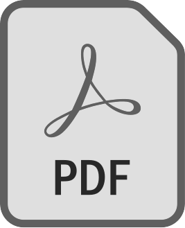

HOW2PALLET
Schritt-für-Schritt-Anleitung um
GÜNSTIGE & NACHHALTIGE
Möbel aus Europaletten zu bauen.
Instagram:

Anleitungen als PDF kostenlos zum Download:


Über uns:
Wir sind Christiane & Sina, 2 Schülerinnen der Handelsakademie Ybbs an der Donau.
Im Rahmen unserer Diplomarbeit zum Thema Kreislaufwirtschaft habe ich, Sina, die Aufgabe, das Upcycling von Baumaterialien für jeden einfach zu gestalten.
Deswegen habe ich eine Anleitung erstellt, mit der jeder ganz einfach und günstig Möbel aus Paletten bauen kann.
Ich würde mich über einen Download meiner Anleitung sehr freuen :)